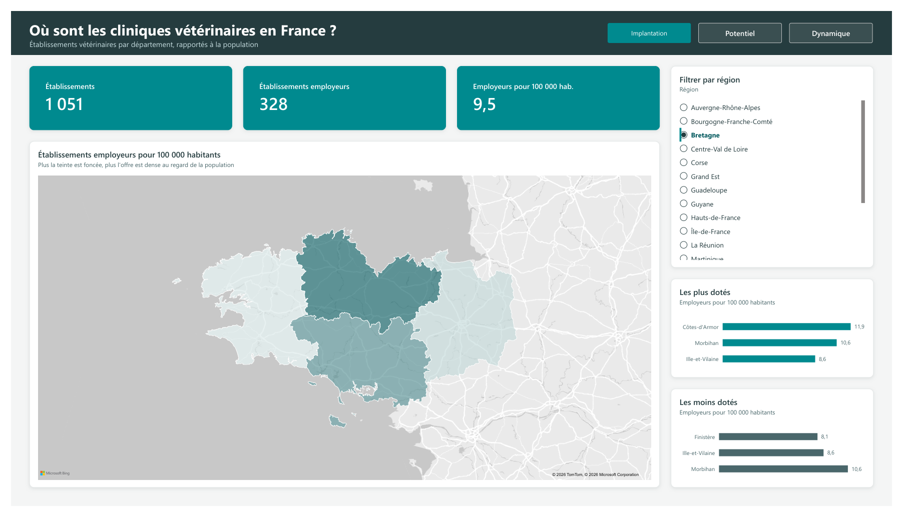
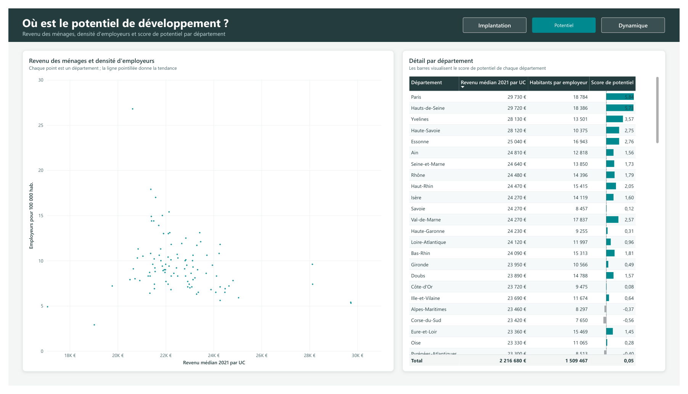
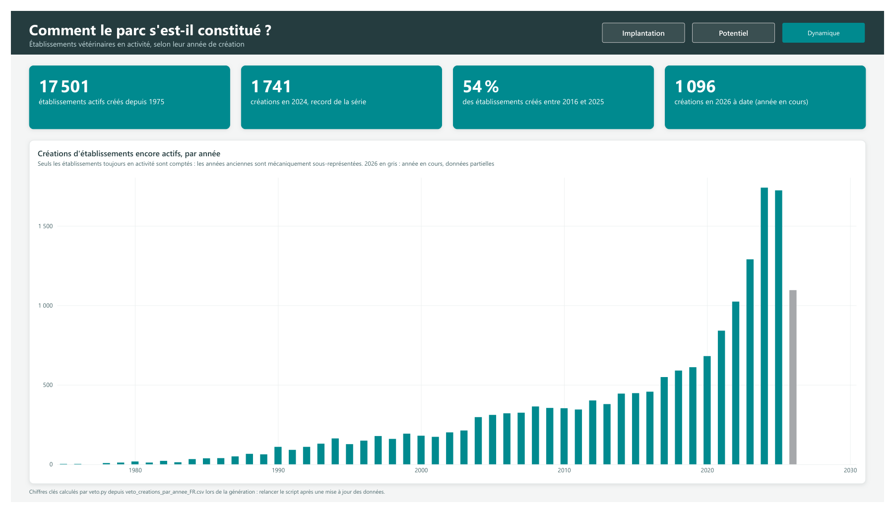

Le rapport
Chaque page répond à une question. Les repères numérotés expliquent les choix de conception : cliquez sur un numéro ou sur une explication pour faire le lien.
Où sont les cliniques vétérinaires en France ?

Vue filtrée sur la Bretagne : chiffres clés, carte et classements se recalculent selon la région choisie.
- 1Chiffres clés
Trois cartes aux couleurs de la charte, chiffres affichés en entier. Elles suivent le filtre région.
- 2Densité plutôt que volume
Établissements employeurs pour 100 000 habitants : on compare des départements de tailles très différentes. Plus la teinte est foncée, plus l'offre est dense.
- 3Filtre par région
Un clic filtre toute la page. Le rapport s'ouvre sur la France entière.
- 4Classements dynamiques
Les 3 départements les plus et les moins dotés, calculés par Power BI avec un filtre Top N : ils se mettent à jour avec les données et la région.
- 5Navigation
Bandeau de titre et onglets entre les pages, pour une lecture comparable à celle d'une application.
Où est le potentiel de développement ?

- 1Deux indicateurs croisés
Chaque point est un département, placé selon le revenu médian des ménages et la densité d'employeurs vétérinaires.
- 2Libellés lisibles
« Revenu médian 2021 par UC » et des montants formatés (« 29 730 € ») plutôt que les noms techniques des colonnes.
- 3Barres divergentes
Le score de potentiel est positif ou négatif : barres teal d'un côté de l'axe, grises de l'autre.
Comment le parc s'est-il constitué ?

- 1L'essentiel en quatre chiffres
Total, année record, part des dix dernières années et année en cours.
- 2Lecture guidée
Le sous-titre rappelle le biais : seuls les établissements encore actifs sont comptés, donc les années anciennes sont sous-représentées.
- 3Année en cours grisée
2026 est incomplète. Sans ce marquage, le graphique suggérerait une chute des créations qui n'existe pas.
- 4Ordre chronologique
L'histogramme était trié par valeur ; remis par année, il montre la forte accélération des dernières années.
Démarche
Du jeu de données brut à un rapport qu'un décideur lit en quelques minutes.
-
Poser les questions
Trois questions, une par page : où est l'offre aujourd'hui, où pourrait-elle se développer, comment s'est-elle construite.
-
Préparer les données
Données publiques INSEE par département, importées avec Power Query, puis des mesures pour rapporter l'offre à la population.
-
Concevoir la lecture
Thème sur mesure, grille de mise en page, libellés lisibles, et marquage de ce qui pourrait tromper le lecteur, comme l'année incomplète.
Compétences mobilisées
Ce que ce projet montre concrètement.
Power BI Desktop
- Mesures DAX
- Filtres Top N
- Segments
- Carte choroplèthe
- Navigation entre pages
Données
- Power Query
- Import CSV
- Indicateurs rapportés à la population
Datavisualisation
- Thème JSON sur mesure
- Grille de mise en page
- Hiérarchie visuelle
- Lisibilité des chiffres